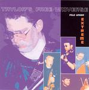

Home Artist links Label link

Taylors Free Universe - File Under Extreme
| Artist: | Taylors Free Universe |
| Title: | File Under Extreme |
| Label: | Marvel of Beauty Records MOBCD 007 |
| Length(s): | 50 minutes |
| Year(s) of release: | 2002 |
| Month of review: | [05/2004] |
Line up
Karsten Vogel - soprano, alto & tenor sax, key, tape collage (8)
Pierre Tassone - processed violin
Robin Taylor - guitar, electronics, keys (1), fuzz bass (1 & 4), percussion
(5), tapes (4), treatments
Johan Segerberg - double bass, electronics
Kalle Mathiesen - drums, sampler
Tracks
| 1) | Germanism | 7.11
|
| 2) | Stand Apart | 0.12
|
| 3) | Free-bop | 5.38
|
| 4) | More Germanism | 4.22
|
| 5) | Age Concern | 5.40
|
| 6) | Less Is More | 9.34
|
| 7) | Evaluation | 5.33
|
| 8) | Aspects Of A Myth | 11.39
|
| 9) | Bonus Tragg | 0.05
|
Summary
The music
This album here shows different takes on jazz music, very different. Opener
Germanism for instance is an atmospheric piece, mostly tranquil, which fits
in
with ECM jazz, where Jan Garbarek's name comes to mind. Free-bop, on the
other
hand, is, well, free bop, really. Very jazzy, fluttery and honky, and
specifically not necessarily melodic.
More Germanism is, as could be expected, a return to the ECM jazz style,
with
violin dominating on this one. Age Concern is a bit halfway between the two
mentioned styles: it has some rocky guitar and some pipey sax, becoming more
guitar
oriented as it progresses, even adding some seemingly South American blends.
Less Is More is almost too esotheric for ECM material. It floats on in a way
that's almost non committal, yet not so, and still completely different from
new
age.
Evaluation is the complete opposite, starting off in a free jazz vein right
away, only piping down a bit after the initial throes
Aspects Of A Myth isn't as tranquil as some of the material, but blends some
sharper sounding sax with atmospherics.
Conclusion
Well, this is an interesting piece of work. Where the majority of the
material is in an ECM vein, there is a wildly bopping free bop track present
as well. Those into ECM jazz, especially stuff by the likes of the Garbarek
Rypdal clan
or Radius would find a lot to cherish in this disc. I always find it hard to
give a good idea of how original material like this is, but it does sound
good, tranquil, yet refraining from becoming boring. Good stuff.
© Roberto Lambooy